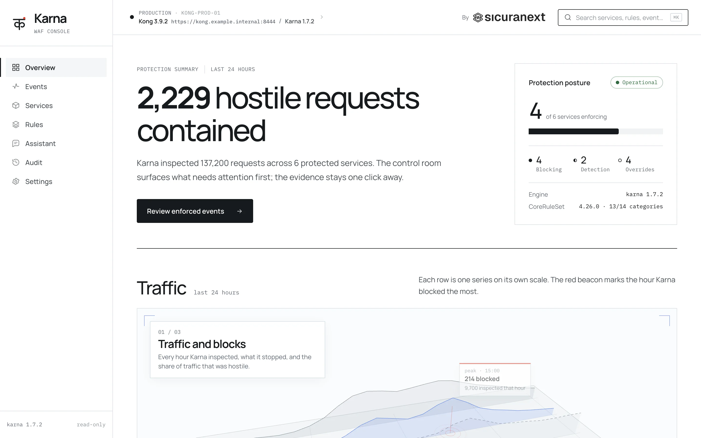
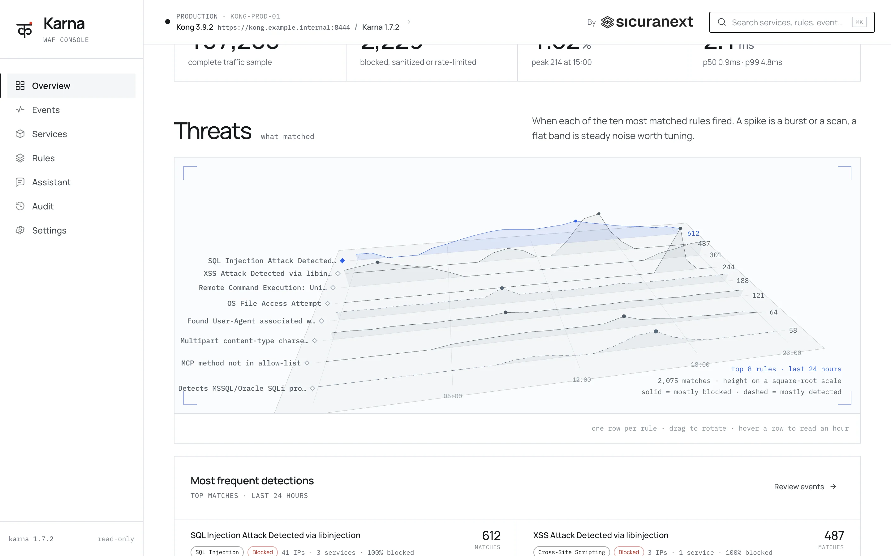
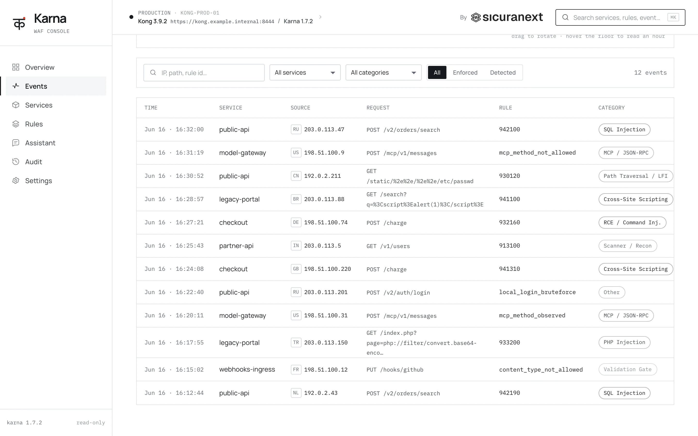
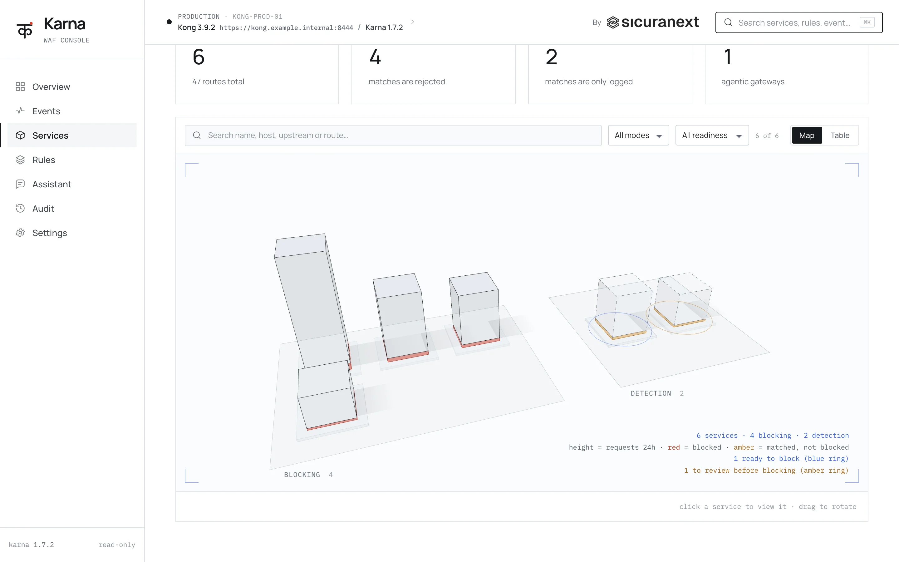
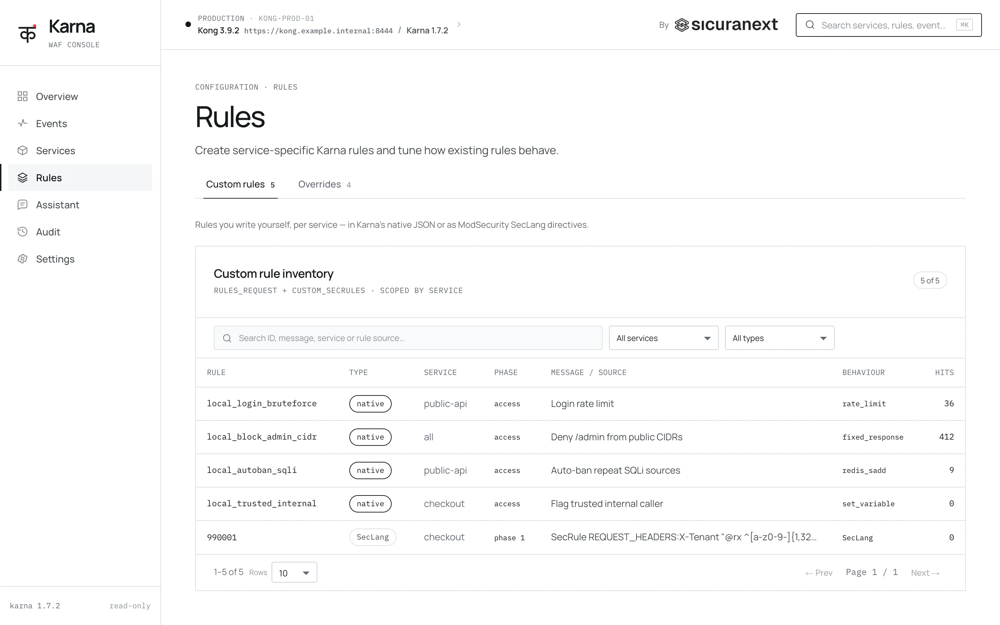

Always-on validation gates
Method allow-list · path-character policy · header deny-list · content-type / charset allow-list. Runs first, unconditionally: fail closed, fast.
The fastest Web Application Firewall you can run, designed to be operated by AI agents. Your agent deploys it, tunes it and writes its rules, so protecting your apps and APIs is its job while you focus on your business. Full OWASP CoreRuleSet 4.x detection, 2 to 4 times faster than ModSecurity.
ModSecurity was a stroke of genius in 2002. Two decades and a whole new runtime later, half of what it does is wrestling with Apache assumptions Kong never had. Karna keeps the genius and throws out the baggage.
SecAction initcol and an Apache-style persistence file. Not a great fit beside Redis.luarocks make, kong reload, no rebuild ever.rule-control.matches[]. Ship to anything that reads JSON.In the Mahabharata, Karna is the warrior born already wearing his armor. Surya, the sun god, gave his son a breastplate and earrings fused to his body, so no blade or arrow could ever reach him. That is what a WAF should be: protection your application carries from birth, not a wall bolted on after the first attack. The mark draws the Devanagari letter क (ka), the first sound of his name, with Surya's sun rising beside it.
The console reads Karna's audit log and your Kong configuration. Traffic,
threats and every enforced request are one click from the evidence, and
services, modes and rules are edited in the same place they are watched.
Try it in the live demo, or clone the
repo and run
./quickstart.sh to get Kong, Karna and the console on your
machine.





How much hostile traffic was contained, how many services are enforcing, and what needs attention first.
When each of the most matched rules fired. A spike is a burst or a scan; a flat band is steady noise worth tuning.
One audit entry per request: who sent it, which rules matched, what Karna did. Pivot by IP or rule, export NDJSON.
Every Kong service Karna protects, in blocking or detection, with the ones ready to switch to blocking marked.
Custom rules per service, in native JSON or SecLang, and the overrides that change how existing CRS rules behave.
A real name like O'Brien, or an address like "Via dell'Orso, 5", trips
the same SQL-injection heuristics as an attack. Every other WAF answers
with a 403 and a broken signup form. Karna's fix_matched_parts
action strips the dangerous characters out of the matched field and lets
the request continue upstream, so a false positive costs a character, not
a customer.
Works on the path, query args, headers, and body alike. Each sanitized
request is logged with action: "sanitized", so you can tune
from real traffic instead of guessing.
action: "sanitized".Same hardware, same OWASP CRS, the same HTTP status on every request. So this is pure throughput, not leniency. Karna doesn't just keep pace with ModSecurity, it laps it, and it's a Lua plugin doing the lapping.
| Requests / second (higher is better) | Apache + ModSec2 | nginx + ModSec3 | Caddy + Coraza | Karna |
|---|---|---|---|---|
| Blocking attacks | 852 | 1623 | 570 | 3326 |
| Mixed real-world traffic | 612 | 1270 | 337 | 1569 |
| API with embedded attacks | 190 | 688 | 184 | 815 |
| Benign throughput, no cache | 392 | 1139 | 319 | 1310 |
CRS is brilliant detection wrapped in rules that bury teams in false positives. Karna ships the operational layer it's missing: the in-repo CRS-fix controls switch off the worst offenders for you, automatically. What's left passes the entire in-scope suite, clean in both directions. No missed attacks, no false alarms.
crs-regression-test/.
Every rule Karna intentionally doesn't fire is documented, and the handful of PL3+ residuals are listed.
Anything failing that isn't on the list is a real gap, please open an issue.
The headline acts are above. Below is the rest of what comes in the box, and it's a lot. Every knob and variable is in the README.
Full CRS loader at init_worker, tracking 4.26.0 in the regression suite. Seclang operators (@detectSQLi, @streq, @ipMatch) map to engine-native names automatically.
SQLi and XSS detection straight from the C library, called via LuaJIT FFI. No regex roulette for the two attack classes regex handles worst.
Method allow-list, path-character policy, header deny-list, content-type and charset allow-list. The structural checks run before any rule: fast, deterministic, no false positives.
Per-service rules_request / rules_response as stringified JSON. Adjust, exclude, or rewrite CRS rules at request time through the rule-control layer, without forking the CoreRuleSet.
Change what an existing rule does from plugin config: switch a block to sanitize, drop a terminal action, force a block, or rewrite the response. Selected by id, range, or tag. The cached rule pack is never mutated.
Load the upstream CRS app plugins (WordPress, Drupal, and friends) straight from disk, or inline your own SecLang. Their ctl:ruleRemove* directives are parsed and applied per request.
URL-encoded, JSON, multipart, and XML bodies parsed and flattened to key-value pairs for rule evaluation. Optional base64 and gzip decode. The multipart parser is hardened against known smuggling bypasses.
Native fixed-window rate limiting as a rule action, plus standalone counter increments, both backed by Redis. No shared-dict eviction games, no per-worker drift. Slots next to your existing Kong Redis.
One JSON entry per request, every match in matches[]. Add your own fields with set_log_fields. Ship to Loki, OpenSearch, or S3. A ModSecurity-compatible v1 still ships for replay parity.
GeoIP, ASN, and user-agent data set by sibling Kong plugins is picked up as geoip.* / asn.* rule variables and recorded in the audit log. Sibling plugins can also append their own external_matches.
A Karna detection can write into kong.ctx.shared with set_variable, so a sibling plugin downstream changes its behaviour without ever knowing Karna is there. The sidecar pattern, done cleanly.
Toggle engine_blocking_mode per service. Shadow-deploy alongside the existing edge, compare audit logs, then flip to enforce once the signal is clean.
rx, libinjection_sqli, libinjection_xss, ipMatch, pmFromFile, validateUtf8Encoding, validateByteRange, in positive and negated forms. Dispatched by string equality, no surprises.
Karna ships a Claude Code skill that teaches your coding agent how to deploy, configure, and write rules for the WAF. One line to install, then just ask. Install the skill →
Every request flows through the same four layers, in the same order. No anomaly scoring, no implicit chains across phases. Each layer is independently toggleable per service.
Method allow-list · path-character policy · header deny-list · content-type / charset allow-list. Runs first, unconditionally: fail closed, fast.
Adjust, exclude, or rewrite global rules at request time. Includes the in-repo CRS-fix layer that neutralises known false-positive-prone OWASP CRS rules in production.
Your custom rules_request / rules_response. Virtual patching for emergencies that don't deserve a deploy.
The CRS rule pack loaded from disk at init_worker. Paranoia 1 to 4. Detection-only or blocking per service.
Karna parses the JSON-RPC envelope on every request, reassembles SSE responses on the Streamable HTTP transport, and runs rules per event. Your model gateway gets the same layered defense as the rest of the API surface.
mcp_jsonrpc_validmcp_method_inmcp.* namespace, plus request.body.json.*{
"rule_id": "mcp_method_denied",
"phase": "request",
"transport": "streamable-http",
"method": "tools/call",
"variable": "request.body.json.params.name",
"matched": "shell_exec",
"action": {
"fixed_response": 403,
"reason": "tool not allow-listed"
},
// karna.engine 1.0.0 · paranoia=2 · 1.8ms
}
Kong, the OWASP CoreRuleSet, libinjection, and Karna baked together. Run it as a reverse proxy in front of any app you already have, in any language, then flip blocking on with one flag.
The production Dockerfile ships in the repo. git clone, then docker build gives you one self-contained image: Kong, the OWASP CoreRuleSet, libinjection, and Karna baked together. Nothing to compile by hand.
Karna runs on Kong as a reverse proxy, so it sits in front of whatever you already run: any language, any framework, on any host. A small DB-less kong.yml routes traffic to your backend and turns Karna on.
One docker compose brings up Karna in front of your app (and Redis for rate-limiting), and traffic flows client → Karna → your app. Start in detection-only, watch the audit log, then set engine_blocking_mode to block.
# clone the repo (the production Dockerfile ships with it) git clone https://github.com/sicuranext/karna cd karna # one self-contained image: Kong + OWASP CRS + libinjection + Karna, # plus the native RE2 / Aho-Corasick scanners. Nothing to compile by hand. docker build -f docker/Dockerfile -t karna .
# kong.yml · DB-less. Put Karna in front of any backend. _format_version: "3.0" services: - name: my-app url: http://my-backend:8080 # your existing app, any language routes: - name: my-app paths: ["/"] plugins: - name: karna config: engine_blocking_mode: false # start detect-only; set true to block (403) paranoia_level: 1 # OWASP CRS paranoia 1-4 auditlog_enabled: true redis_host: redis # only used by rate_limit rules redis_port: 6379
# point kong.yml at your app, then bring up Karna + Redis (DB-less) docker compose -f docker/docker-compose.prod.yml up -d # …or run the image on its own (rate_limit rules then need an external Redis) docker run -d --name karna -p 8000:8000 \ -e KONG_DATABASE=off \ -e KONG_DECLARATIVE_CONFIG=/kong/kong.yml \ -v $PWD/docker/kong.yml:/kong/kong.yml:ro \ karna # traffic now: client -> :8000 (Karna / Kong) -> my-backend:8080
Karna is a pure Lua plugin, so it installs into an existing Kong or
OpenResty without rebuilding anything. luarocks make, enable
it in kong.conf, reload. Add libinjection and the CoreRuleSet
once and you are inspecting live traffic.
Clone the repo and run ./scripts/install.sh. One command installs the plugin (pure Lua, no rebuild of Kong or OpenResty), builds libinjection, downloads the OWASP CoreRuleSet, and builds the native scanners for the fast path.
Add karna to plugins, set the PCRE match limit, and kong reload. The plugin loads without a restart.
Attach Karna to any service or route through the Admin API or your declarative config. Start in detection-only, then flip engine_blocking_mode on.
# one command: the plugin + libinjection + the OWASP CoreRuleSet # + the native RE2 / Aho-Corasick scanners. On a Debian-based Kong # image it installs the build dependencies too. git clone https://github.com/sicuranext/karna.git cd karna sudo ./scripts/install.sh # override a default, or skip a piece you already have: # CRS_VERSION=4.27.0 sudo -E ./scripts/install.sh # sudo ./scripts/install.sh --skip-libinjection --skip-crs
# kong.conf · enable Karna, no rebuild plugins = bundled,karna # cap PCRE backtracking (safety vs catastrophic regex) nginx_http_lua_regex_match_limit = 100000 # then reload Kong to load the plugin (no restart needed) kong reload
# turn Karna on for an existing service (Admin API) curl -X POST http://localhost:8001/services/<service>/plugins \ -d name=karna \ -d config.engine_blocking_mode=false \ -d config.paranoia_level=1 \ -d config.auditlog_enabled=true # start detect-only; set engine_blocking_mode=true to block (403)
You don't need a Kong-native stack. Karna runs on Kong as a reverse proxy, so it guards any app behind it: any language, any framework, anything already in production. Source-available, and the same crs-regression-test/ harness that gates every release ships in the repo.